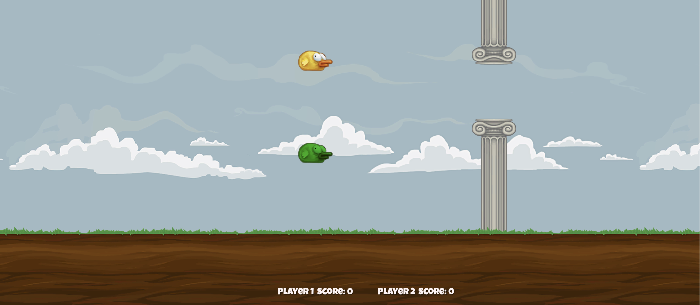

Used k-means clustering algorithm to discover clusters in a U.S Crime data set recorded in 1973. Compare and analyze diff. crime categories, including murder, assault and rape and draw conclusions.
Vignere-Cipher Hack with Frequency Analysis (Python2)
Hacked a vignere-ciphered text using relative-frequency-analysis.Demonstrated how concepts built upon caesar cipher decryption and variances can aid decipher. Implemented a python, brute force program to break vignere-ciphered text.
Data Analysis with Google Data Studio (JavaScript)
Utilized modern data analytics and visualization tools to analyze Wild Apricot Membership data. Built a customized data connector in JavaScript that connects WA membership database to Google Data Studio. Demo contained in github repo.

Multiplayers-Flappy-Bird (C#)
Recreated the classic mobile game FlappyBird by Dong Nguyen using Unity in C#. Added a multiplayer version that allowed two different players to compete. Currently only support Desktop version (exe and mac.app). Executable downloadable from github repository.
Legend of Zelda NES (C#)
Recreated the classic NES game Legend of Zelda using Unity in C#. Added a custom mechanics to fight with Iori. Developed in large codebase that involves 20+ scenes with different enemies and their corresponding animations. Details contained in Github Repo.